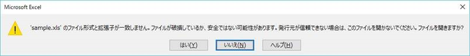
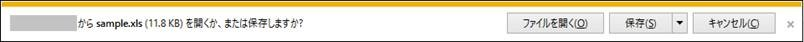
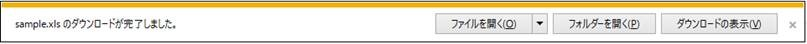
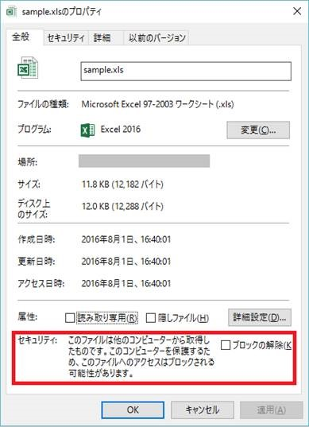
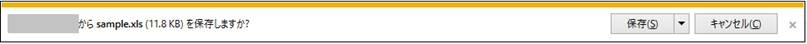

(※ 2016 年 8 月 2 日に Japan Office Support Blog に公開した情報のアーカイブです。)
こんにちは、Office サポート チームです。
今回は、2016 年 7 月のセキュリティ更新プログラムを適用した後、一部の Web 上にある Excel ファイルが開けない現象について説明します。
1. はじめに
この記事をご覧の方は、実際の中身は HTML ファイルだが、ファイル名を「Sample.xls」のようにして Excel で開くといったシナリオの経験はあるでしょうか。
本記事ではこのようなファイルを「偽装されたファイル」と呼びますが、2016 年 7 月の更新プログラム MS16-088 で、偽装された Excel ファイルを Web サイトから開くことができなくなりました。 今後、Web サイトから Excel ファイルとして開きたいときは、偽装を行わず正しい Excel 形式のファイルを利用する必要があります。
この記事では、この状況に直面しているユーザーや Web システムの構築担当の方向けに、動作変更の内容や、また、すぐに Web サーバーの対応を行うことは難しい状況の方向けに、暫定的な回避方法もご説明しています。
2. 現象
ユーザーのクライアント端末にインストールされた Excel を使って、ハイパーリンクなどから Web 上の Excel ファイルを開くというシナリオを想定します。
Excel は、HTML 形式のファイルを開くことができます。Web システムでは、ファイル名や MIME-TYPE を工夫して、HTML ファイルを Excel ファイルに見せかけて、Excel アプリケーションで開かれるよう構築されていることがあります。
このようなファイルは、一見「Sample.xls」のように Excel ファイルに見えるものの、実際には HTML 形式で内容が記述されている「偽装されたファイル」です。(ファイルをメモ帳などのテキスト エディタで開くと中身は HTML であることが確認できます。)
これまでの Excel の動作では、偽装されたファイルは既定では以下のような警告メッセージが表示され、ユーザーが [はい] を選択することで開くことができました。

しかしながら、偽装されたファイルにおいて Office の脆弱性が悪用される可能性があることが確認されたため、2016 年 7 月度公開のセキュリティ更新プログラム MS16-088 で、悪用される可能性のあるシナリオにおいて、偽装されたファイルを開くことができないよう Excel の動作を変更しました。
マイクロソフト セキュリティ情報 MS16-088 - 緊急
Microsoft Office 用のセキュリティ更新プログラム (3170008)
https://technet.microsoft.com/ja-jp/library/security/ms16-088
この動作変更の影響を受け、MS16-088 セキュリティ更新プログラムの適用後、これまでは開けていた Web 上の Excel ファイル (偽装されたファイル) を開けない状況に直面することがあります。 影響を受けるかどうかは、Excel のセキュリティ設定や Web サーバーの設定が関連します。この点は、詳細を後述します。
3. 対象バージョン
Excel 2010 以降のバージョンで発生します。対象の更新プログラムは、それぞれ以下の通りです。
MS16-088:Excel 2010 セキュリティ更新プログラム2016 年 7 月 12 日
https://support.microsoft.com/ja-jp/kb/3115322
Excel 2013 のセキュリティ更新プログラム MS16-088: 説明: 2016 年 7 月 12 日
https://support.microsoft.com/ja-jp/kb/3115262
MS16-088:Excel 2016 セキュリティ更新プログラム2016 年 7 月 12 日
https://support.microsoft.com/ja-jp/kb/3115272
4. 変更された動作の詳細
Excel 2010 以降のバージョンでは、「保護されたビュー」という機能が追加されました。
これは、インターネットなどの安全ではない可能性がある場所と判定された場所からファイルを開く場合に、編集や保存などを抑止してコンピューターを保護する機能です。詳細は、以下の資料をご参照ください。
保護されたビューとは
https://support.office.com/ja-jp/article/-d6f09ac7-e6b9-4495-8e43-2bbcdbcb6653
今回の動作変更では、保護されたビューでファイルを開くシナリオで、偽装されたファイルが開かれないようになりました。
では、Excel がファイルを保護されたビューで開くのはどういう場合かというと、一般的なシナリオは上記の参考資料に記載があります。 技術者向けにもう少し詳細にご説明すると、以下のようなケースが該当します。
[MS16-088 の影響を受けるケース]
Web サーバーからのレスポンス ヘッダーに Content-Dis付与しているファイルをブラウザから直接開く場合
ブラウザのテンポラリ フォルダーから開かれますが、このフォルダー内のファイルは安全でないとみなされるため、保護ビューで開きます。
インターネット ゾーンの Web サイトからダウンロードしたファイルで、ファイルがブロックされている場合
インターネット上から入手されたとみなされる場合には、ファイルがブロックされ、既定では保護されたビューで開きます。
反対に、以下のようなケースでは保護されたビューが適用されないため、今回の動作変更の影響を受けません。
[MS16-088 の影響を受けないケース]
- 信頼された Web サイトからダウンロードしたファイルを開く場合
信頼できるファイルとみなされるためファイルがブロックされず、通常のローカルにあるファイルとして扱われ、保護されたビューは適用されません。ダウンロードせずブラウザから直接開く場合は、信頼された Web サイト上のファイルでも保護されたビューが適用されることにご注意ください。 - Web サーバーからのレスポンス ヘッダーに Content-Dis付与している、または明示的に指定していないファイルをブラウザから直接開く場合
Web サーバー上から直接開く動作になり、読み取り専用で開きます。このとき、保護されたビューは適用されません。一旦ローカルにダウンロードすると、インターネット サイトの場合はファイルがブロックされるためファイルは開かれません。
5. 暫定回避策
MS16-088 を適用した状態で Excel で偽装されたファイルを開く方法として、以下の方法が検討できます。
(1) ローカルに一旦保存した上でファイルを信頼する
(2) Content-Dis使用する
(3) 保護されたビューを無効にする
(1) ローカルに一旦保存した上でファイルを信頼する
[MS16-088 の影響を受けないケース] でご説明したとおり、ブラウザで一旦ファイルをローカルに保存し、かつファイルのブロックが行われていない状態であれば、これまで通りにファイルを開くことができます。
Internet Explorer 11 の場合、Web サイトからファイルを開こうとすると以下のような通知バーが表示されますので、ここで [保存] を選択します。

保存が完了すると以下の通知バーが表示されます。ファイルがブロックされていない場合にはこのまま [開く] を選択できます。

保存したファイルは、Web サイトがインターネット ゾーンの場合などにはブロックされます。ファイルがブロックされているかどうかは、以下のようにプロパティで確認できます。

ファイルがブロックされている場合、安全なファイルであれば、上の画面の [ブロックの解除] オプションにチェックを入れてブロックを解除することができます。 また、Internet Explorer 11 の [インターネット オプション] 内の [セキュリティ] タブ - [信頼済みサイト] にファイルが格納されている Web サイトを登録して、予めファイルがブロックされないようにすることもできます。
補足情報)
Web サーバー側の設定で、以下のように Internet Explorer の通知バーに [開く] ボタンを表示しないよう制御することもできます。

この方法については、以下の資料をご参照ください。
ダウンロード エクスペリエンスのカスタマイズ
https://msdn.microsoft.com/library/jj542450%28v=vs.85%29.aspx?#noOpenDirective
参照個所 : [NoOpen ディレクティブ] セクション
(2) Content-Dis使用する
[MS16-088 の影響を受けないケース] でご説明したとおり、Web サーバーから直接 [読み取り専用] でファイルを開く場合には、保護されたビューは適用されません。
Web サーバーから直接ファイルを開くか、ローカルに一時ファイルとしてダウンロードするかどうかは、レスポンスヘッダーの Content-Disposition に指定する値によって異なります。 Internet Explorer 11 の場合、以下のような動作になります。
[content-disposition に指定する値 : 動作]
| 値 | 動作 |
|---|---|
| Attachment | ブラウザで設定されたローカルのテンポラリ フォルダーに ファイルをダウンロードし、ここからファイルを開きます。 |
| Inline | Web サーバーから直接ファイルを開きます。 |
| 指定なし | Inline と同様、Web サーバーから直接ファイルを開きます。 |
Web サーバーから直接ファイルを開く場合、ファイルを開くために必要な Web サイトのサポートする機能などを確認するため、OPTIONS リクエストなどの HTTP リクエストが Excel から送信されます。これにより、プロキシなどで認証を求めるネットワーク構成では認証ダイアログが表示されたり、フィルタリングが実施されている構成ではファイルが開かれない場合があります。
補足
この方法で開く場合、以下のブログ記事の動作についてもご確認ください。
1 つの Web ページ上の Excel ファイルが 2 つ以上直接開けない件について
https://blogs.technet.microsoft.com/officesupportjp/2016/08/01/issue-multiple-excel-files-cannot-be-opened-from-a-webpage/
(3) 保護されたビューを無効にする
MS16-088 の動作変更は、保護されたビューで開くときの処理に加えられたものです。保護されたビュー機能自体を無効化すると、この動作変更の影響を受けません。 Excel 2010 以降のバージョンでは、保護されたビューは既定で有効となりますが、オプションからこの機能を無効することができます。
変更方法は、以下の資料の “保護ビューの設定を変更する” セクションをご参照ください (先程ご紹介した資料の再掲です)。
保護されたビューとは
https://support.office.com/ja-jp/article/-d6f09ac7-e6b9-4495-8e43-2bbcdbcb6653
この方法では、保護されたビューは、無効に設定したオプションの対象となるシナリオで開かれるすべてのファイルについて無効化されます。安全でないファイルを開かないよう十分にご注意ください。
本情報の内容 (添付、リンク先などを含む) は、作成日時点でのものであり、予告なく変更される場合があります。